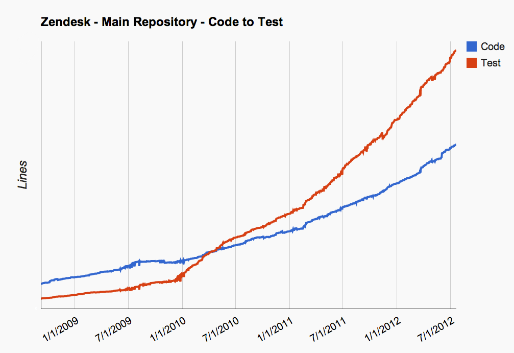
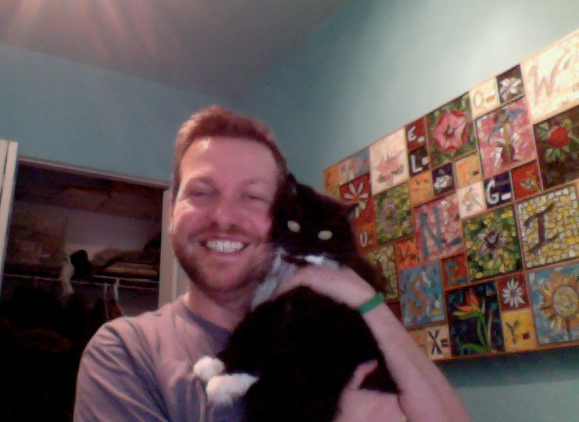
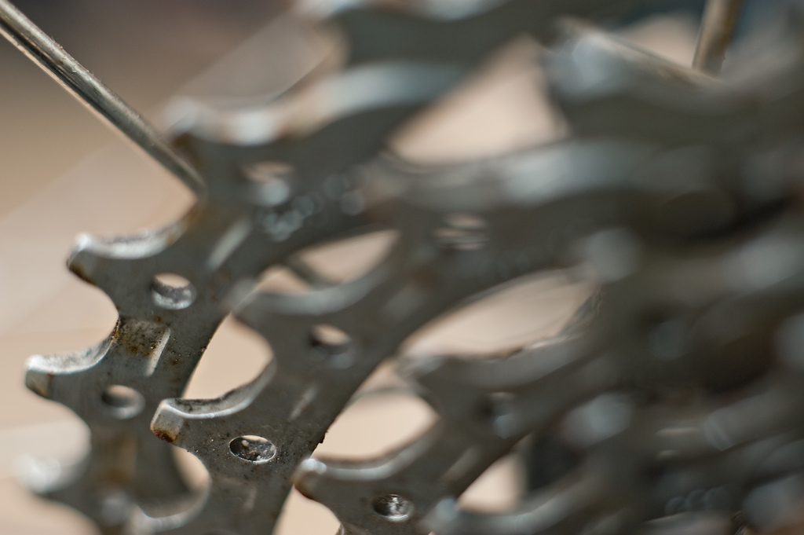
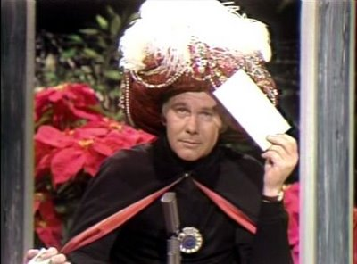

Solution 1: Fast Test Suite

http://twitpic.com/ashs8m/full
Organizations which design systems... are constrained to produce designs
which are copies of the communication structures of these organizations.
Conway's Law
IMPORTANT!
Takeaway 1: Break up the Team
Sea Monster the CMShttp://www.flickr.com/photos/btsiders/74652478/Rails 2 & Assets

http://www.flickr.com/photos/amberandclint/4215036529/Zaphodhttp://www.flickr.com/photos/bladewood/2839103821/Zaphod's Stress Levelhttp://www.flickr.com/photos/topgold/6273248505/Meetings Were Heldhttp://cheezburger.com/5833564416Coffee Was Consumedhttp://www.flickr.com/photos/9525555@N07/6071862938/

Carnac the Magnificent